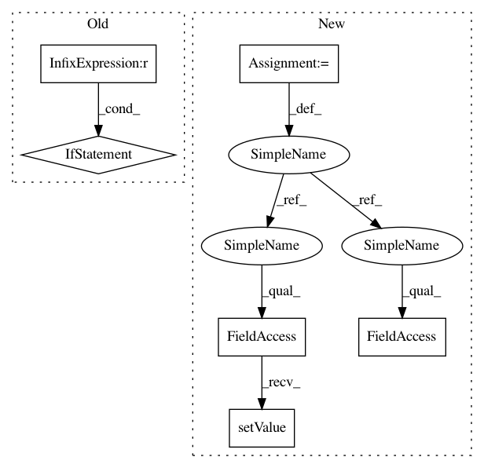

34b42727c0d621d850eda3d230d628dc37e6639b,ilastik-shell/applets/dataSelection/opDataSelection.py,OpDataSelection,setupOutputs,#OpDataSelection#,40
Before Change
def setupOutputs(self):
// We can"t do anything unless all input slots are the same length
if len(self.FileNames) == len(self.InvertFlags) == len(self.GrayConvertFlags):
// Ensure the proper number of outputs
self.OutputImages.resize(len(self.FileNames))
// Rebuild the list of provider slots from scratch
self.providerSlots = []
// FIXME: MultiInputSlot-to-MultiInputSlot clones don"t work, so we have to set the value manually...
self.multiReader.FileNames.resize( len(self.FileNames) )
for i in range(0, len(self.FileNames)):
self.multiReader.FileNames[i].setValue(self.FileNames[i].value)
for i in range(len(self.FileNames)):
// By default, our output is the raw multi-reader output
providerSlot = self.multiReader.Outputs[i]
// If the user wants to invert the image,
// insert an intermediate inversion operator on this subslot
if self.InvertFlags[i].value:
inverter = OpGrayscaleInverter(graph=self.graph)
inverter.input.connect(providerSlot)
providerSlot = inverter.output
// If the user wants to convert to grayscale,
// insert an intermediate rgb-to-grayscale operator on this subslot
if self.GrayConvertFlags[i].value:
converter = OpRgbToGrayscale(graph=self.graph)
converter.input.connect(providerSlot)
providerSlot = converter.output
// Remember which operator is providing the output on this subslot
self.providerSlots.append(providerSlot)
// Copy the metadata from the provider we ended up with
self.OutputImages[i].meta.dtype = providerSlot.meta.dtype
self.OutputImages[i].meta.shape = providerSlot.meta.shape
self.OutputImages[i].meta.axistags = copy.copy(providerSlot.meta.axistags)
def getSubOutSlot(self, slots, indexes, key, result):
// Request the output from the appropriate internal operator output.
req = self.providerSlots[indexes[0]][key].writeInto(result)
res = req.wait()
After Change
// If we should find the data in the project file, use a dataset reader
if datasetInProject:
reader = OpProjectDatasetReader(graph=self.graph)
reader.ProjectFile.setValue(self.ProjectFile.value)
reader.InternalPath.setValue(datasetInfo.internalPath)
providerSlot = reader.OutputImage
else:
// Use a normal (filesystem) reader
reader = OpInputDataReader(graph=self.graph)
reader.FilePath.setValue(datasetInfo.filePath)
In pattern: SUPERPATTERN
Frequency: 3
Non-data size: 6
Instances
Project Name: ilastik/ilastik
Commit Name: 34b42727c0d621d850eda3d230d628dc37e6639b
Time: 2012-05-01
Author: bergs@janelia.hhmi.org
File Name: ilastik-shell/applets/dataSelection/opDataSelection.py
Class Name: OpDataSelection
Method Name: setupOutputs
Project Name: ilastik/ilastik
Commit Name: 6c331b84293bb6cf5dc5480037d69cc0ffb0c6fe
Time: 2013-09-18
Author: martin.schiegg@iwr.uni-heidelberg.de
File Name: ilastik/applets/thresholdTwoLevels/thresholdTwoLevelsGui.py
Class Name: ThresholdTwoLevelsGui
Method Name: setupLayers
Project Name: ilastik/ilastik
Commit Name: 34b42727c0d621d850eda3d230d628dc37e6639b
Time: 2012-05-01
Author: bergs@janelia.hhmi.org
File Name: ilastik-shell/applets/dataSelection/opDataSelection.py
Class Name: OpDataSelection
Method Name: setupOutputs
Project Name: ilastik/ilastik
Commit Name: c7d1624e3a358f12f7ca2319592cf90384b6cacf
Time: 2012-05-01
Author: bergs@janelia.hhmi.org
File Name: ilastik-shell/applets/dataSelection/opInputDataReader.py
Class Name: OpInputDataReader
Method Name: setupOutputs